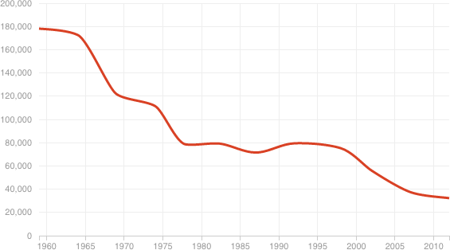

Acres Of Land Used To Produce Coffee (1959-2012)
For decades, coffee production declined in Puerto Rico. With small farms and scarce labor, the island struggled to compete with commercial producers in Mexico, Colombia and Brazil.
